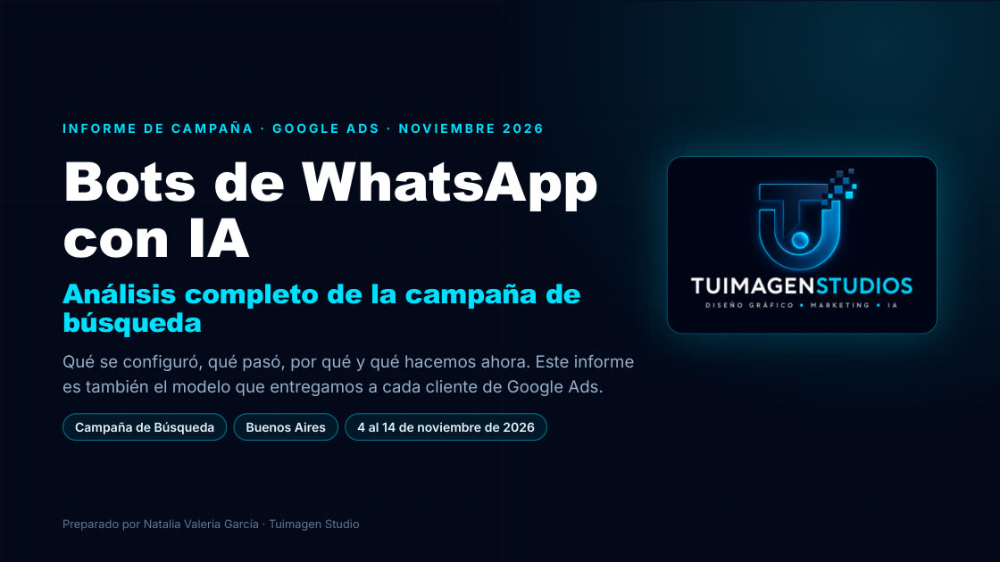
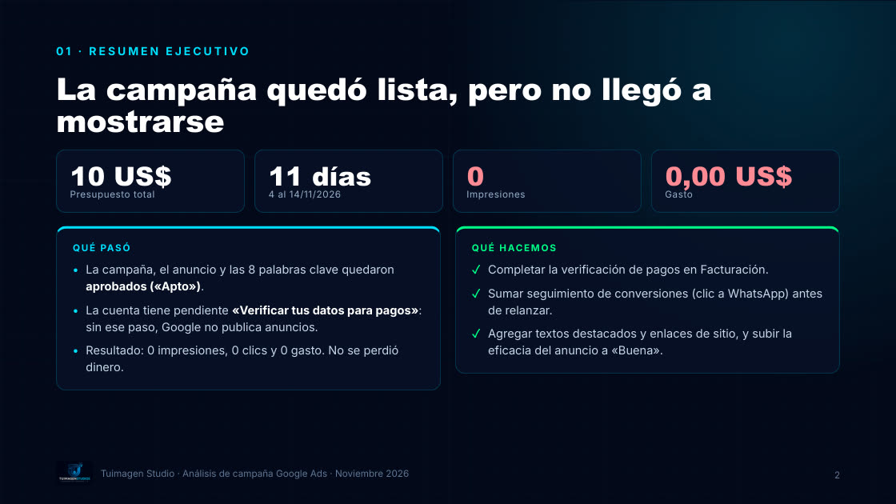
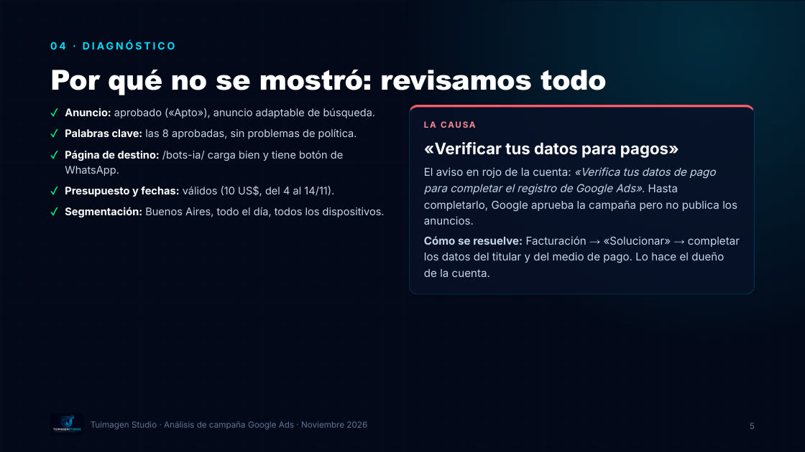
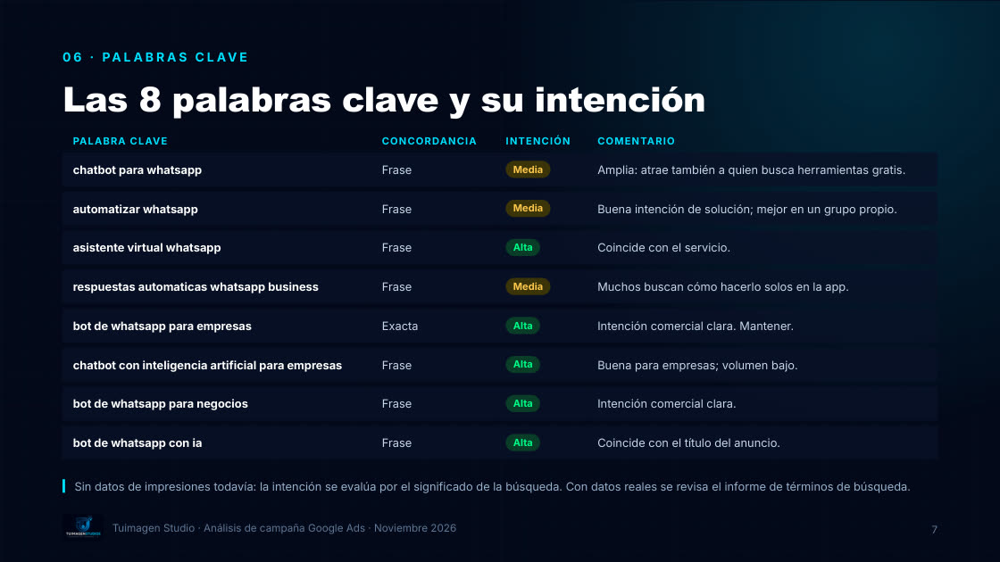
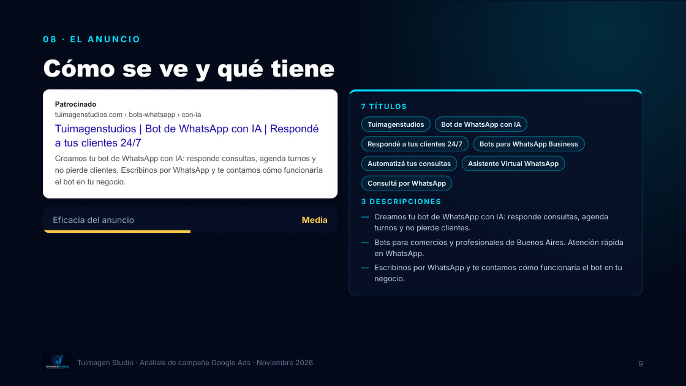
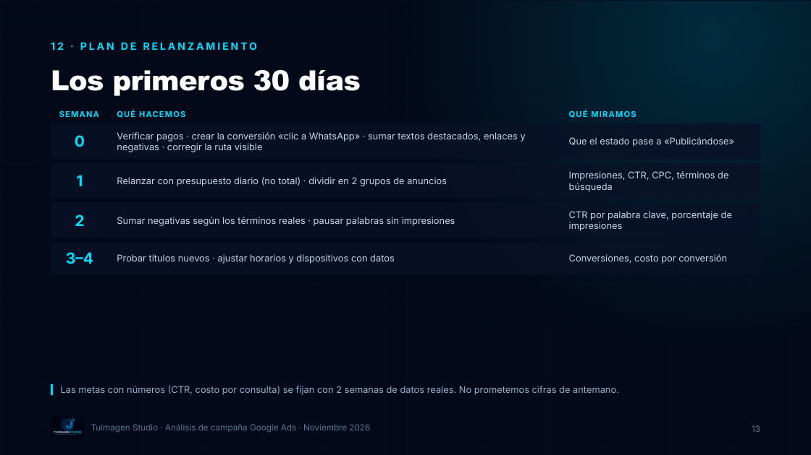

La campaña de búsqueda de Tuimagen Studio, analizada de punta a punta con el mismo informe que entregamos a cada cliente: cómo se configuró, qué pasó, por qué y cómo se relanza.

Campaña de Búsqueda en la provincia de Buenos Aires, puja Maximizar clics, 1 grupo, 8 palabras clave (frase y exacta), 6 negativas y un anuncio adaptable con 7 títulos y 3 descripciones.
La campaña quedó aprobada pero no llegó a publicarse: la cuenta tenía pendiente verificar los datos de pago. 0 impresiones y 0 gasto. El informe muestra cómo se detecta y se resuelve.
Intención de cada palabra clave, 12 negativas nuevas, cómo pasar el anuncio de eficacia «Media» a «Buena» y los recursos que faltan.
Conversión principal «clic a WhatsApp», plan de relanzamiento semana por semana y el modelo de informe mensual para clientes.




